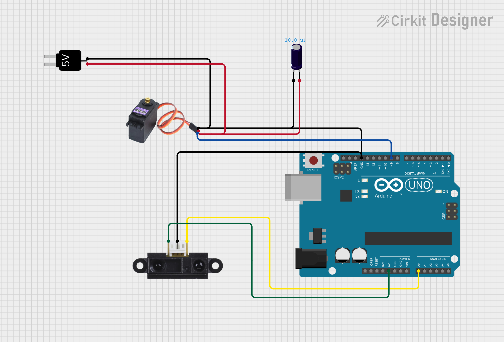

A PID control system is a feedback control method used to continuously adjust a system so that it reaches and maintains a desired target value. PID stands for Proportional, Integral, and Derivative, which are the three components used to calculate the control response.
- Proportional (P): Responds to the current error — the difference between the desired value and the measured value. A larger error produces a larger correction.
- Integral (I): Responds to the accumulation of past errors. This helps eliminate small steady-state errors that the proportional term alone cannot remove.
- Derivative (D): Predicts future error by measuring how quickly the error is changing. This helps reduce overshoot and improve system stability.
A PID controller continuously combines these three terms to determine how much correction should be applied to the system. For this ball-beam system, the error is the difference between the reference distance (the center of the beam) and the ball's actual position. That error is then inputted to the PID controller. The output of the controller is an arbitrary number that depends on the P, I, and D constants: in my case it was in the range of -200 to 200. This was then mapped to an angle the servo could use.
Here is the code that implemented the PID system, along with sensor debouncing and managing servo outputs.
View Source Code
The following are links to SLDPRT files made in SolidWorks. These include the base of the beam, the hinge mechanism, and the case for the MG966R servo that allows it to stand upright.

An MG996R Servo Motor was selected due to its high torque rating and durable metal gears. Smaller plastic-geared servos could not withstand the rapid oscillations caused by the beam and its weight. Additionally, an IR sensor was chosen instead of an ultrasonic sensor because it provides a continuous analog voltage output. In contrast, an ultrasonic sensor must wait for an echo to return before producing a measurement. With a 20 ms PID feedback loop, this sensing delay would reduce the responsiveness and overall performance of the control system.
As shown above, the MG996R servo is powered by an external DC source to prevent damage to the Arduino output pins. The servo can draw up to 2.5 A of stall current, which is far greater than the 40 mA maximum current rating of an ATmega328P output pin. Before using an external power source, the servo was briefly powered directly from the Arduino pins. This resulted in small, infrequent jitters because the Arduino could not supply sufficient current to drive the motor properly. A 10 µF bypass capacitor was also added to reduce high-frequency noise by shunting unwanted signals to ground, improving overall power stability and servo performance.
The PID controller was tuned iteratively using step response testing. Final gains of Kp=18, Ki=7.5, Kd=0.5 produced stable leveling across a range of initial disturbances. The system was demonstrated at the end-of-semester design expo.